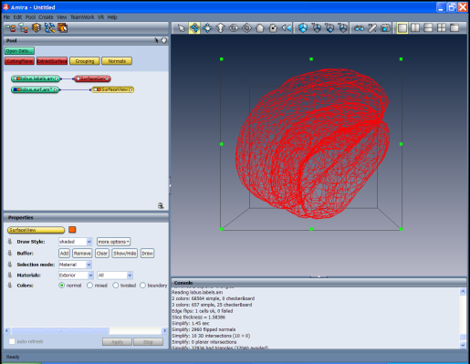
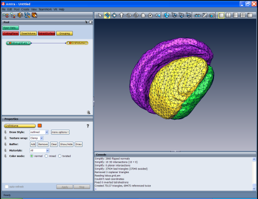

To use the features described in this section an Mesh Option licence is required.
By following this step-by-step tutorial, you will learn how to
generate a volumetric tetrahedral grid from a triangular surface as
created in the previous tutorial. A tetrahedral grid is the basis for
producing various views of inner parts of the object, e.g., cuts
through it, and is frequently used for numerical simulations.
The generation process consists of these steps:
- Simplifying the surface
- Editing the surface
- Generating a tetrahedral grid (Mesh Option license required)
As a prerequisite for the following steps, you need a triangular
surface, which is usually the result of a previous surface
reconstruction. Load the supplied lobus.surf data set from the
data/tutorials directory.
Usually the number of triangles created by the SurfaceGen module
is far too large for subsequent operations, e.g., for a numerical
simulation. Thus, the number of triangles should be reduced in a surface simplification step. In Amira a Surface
Simplification Editor is provided for this purpose. There may be
different goals for the simplification:
- In computer graphics, one wants to prescribe just the
number of faces, because this determines the rendering speed.
- For a numerical simulation, one often wants to specify the
maximum edge length occurring in the grid model.
This tutorial shows how the maximum edge length can be controlled
during simplification.

Figure 22:
Surface representation of optical lobus as triangular grid
- Select the surface lobus.surf.
- Click on the Simplifier (triangle mesh icon) in the Properties Area.
- Set the desired number of faces to 1000 and the desired
maximal distance (i.e. edge length) to 10 in the Simplify port.
- Leave the fast toggle turned off in the Options port. This will cause intersection tests to be
performed during simplification, which will considerably
reduce the probability that the simplified surface contains
self intersections.
- Press the Simplify now button in the Action port.
Simplification terminates when either of the limits given by the
number of faces or the maximum distance is reached. The progress bar
tells you how much of the simplification task has already been done.
In this example the maximum distance will be the limiting factor, and
the resulting surface will contain about 6000 faces.
Besides the maximum edge length, the minimum edge length occurring in
the surface should also be controlled, because the ratio of maximum
and minimum edge length will influence the quality of the resulting
tetrahedral grid. This ratio should not be much larger than 10. If
edges that are too short occur in the simplified surface, they can be
removed as follows.
- Set the desired minimum distance to 2 in the Simplify
port.
- Observe the number of faces as shown at the Surface port,
and press the Contract edges button in port Action. All
edges shorter than 2 will be contracted. In this example about 30
small edges will be detected. You will observe that the number of
faces slightly decreases.
As a second step of preparation for tetrahedral grid generation,
invoke the Surface Editor.
- Select the surface lobus.surf.
- Leave the Surface Simplification Editor (Simplifier) by again
clicking on the triangle mesh icon.
- Enter the Surface Editor by clicking on the Surface
Editor button in the Properties Area.
Automatically, a SurfaceView module will be
attached to the lobus.surf surface. For details about that
module see its description.
When the Surface Editor is invoked, the Surface menu is added
to Amira's menu bar and a new toolbar is placed just below Amira's
viewer toolbar. The Surface/Tests menu contains 8 specific tests which are useful for preparing a
tetrahedral grid generation. Each of the tests creates a buffer of
triangles which can be cycled through using the back and forward
buttons.
- Select Intersection test from the Surface/Tests menu.
The total number of intersecting triangles is printed in the
console window. Intersections shouldn't occur too often if toggle
fast was switched off during surface simplification. In case
they occur, the first of the intersecting triangles and its
neighbors are shown in the viewer window.
- You can manually repair intersections using four basic
operations: Edge Flip, Edge Collapse, Edge
Bisection, and Vertex Translation. See the description of
the Surface Editor for details.
- After repairing, invoke the intersection test again by
selecting it from the Surface/Tests menu or by pressing the
Compute button.
- When the intersection test has been successfully passed,
select the Orientation test from the Surface/Tests menu.
After surface simplification, the orientation of a small number of
triangles may be inconsistent, resulting in a partial overlap of
the materials bounded by the triangles. In case of such incorrect
orientations, which should occur quite rarely, there is an
automatic repair. If this fails, the detected triangles will be
shown, and you can use the above mentioned manual operations for
repair. Note: There are two prerequisites for the
orientation test: the surface must be free of intersections, and
the outer triangles of the surface must be assigned to material
Exterior. If the surface does not contain such a material or
if the assignment to Exterior is not correct, the test will
falsely report orientation errors.
A successful pass of the intersection and orientation test is
mandatory for tetrahedral grid generation. These tests are
automatically performed at the beginning of grid generation. So you
can directly enter the TetraGen module (see below) and try to
create a grid. If one of the tests fails, an error message will be
issued in the console window. You can then go back to the Surface Editor and start editing.
The remaining three tests analyze the surface mesh with respect to
different quality measures. These tests only need to be performed if
the tetrahedral quality of the volumetric grid plays an important
role, e.g., if the grid will be used for a numerical simulation.
- Select Aspect ratio from the Surface/Tests menu.
This computes the ratio of the radii of the circumcircle and
the incircle for each triangle. The triangle with the worst
(i.e. largest) value is shown first, and the actual value
is printed in the console window. The largest aspect ratio
should be below 20 (better below 10). Fortunately there is an
automatic tool for improving the aspect ratio included in
the Surface Editor.
- Select Flip edges from the Surface/Edit menu.
A small dialog window appears. In the Radius Ratio area,
set the value of the "Try to flip a triangle..." field
to 10. Select mode operate on whole surface.
Press button Flip. All triangles with an aspect ratio
larger than 10 will be inspected; if the aspect ratio can
be improved via an edge flip, this will be done
automatically. The console window will tell you the
total number of bad triangles and how many of them could
be repaired. Press the Close button to leave the Flip
edges tool.
- Select again Aspect ratio from the Surface/Tests
menu. Only a small number of triangles with large aspect
ratio should remain after applying the Flip edges tool.
- Select Dihedral angle from the Surface/Tests menu. For
each pair of adjacent triangles, the angle between them at their
common edge will be computed. The triangle pair including the
worst (i.e. smallest) angle is shown in the viewer, and the actual
value is printed in the console window. The smallest dihedral
angle should be larger than 5 degrees (better larger than 10).
- For a manual repair of a small dihedral angle proceed as
follows: select the third points of both triangles (i.e. the
points opposite to the common edge) and move them away from each
other. For moving vertices you must enter Vertex Translation
mode by clicking on the first icon from the right on the top of
the viewer window or by pressing the "t" key. If the viewer
is in viewing mode, switch it into interaction mode by pressing
the ESC key or by clicking on the arrow icon (the first icon
from the top) on the right of the viewer window. Click on the
vertex to be moved. At the picked vertex a point dragger will be
shown. Pick and translate the dragger for moving the vertex.
- In some cases an edge flip might also improve the situation.
Enter Edge Flip mode by clicking on the third icon from the
right on the top of the viewer window or by pressing the "f"
key. Switch the viewer into interaction mode. Click on the edge to
be flipped.
- Select Tetra quality from the Surface/Tests menu. For
each surface triangle the aspect ratio of the tetrahedron which
would probably be created for that triangle will be calculated.
The aspect ratio for a tetrahedron is defined as the ratio of the
radii of the circumsphere and the inscribed sphere. The triangle
with the worst (i.e. largest) value is shown in the viewer, and
the actual value is printed in the console window. The largest
tetrahedral aspect ratio should be below 50 (better below 25). If all
small dihedral angles have already been repaired, the tetra
quality test will mainly detect configurations where the normal
distance between two triangles is small compared to their edge
lengths. Again, the vertex translation and the edge
flip operation are best suited for a manual repair of large
tetrahedron aspect ratios.
- Leave the Surface Editor by again clicking on the
Surface Editor button in the Properties Area.
Hint: In order to see the entire surface again, select the SurfaceView
icon, then press its Clear button, set the Selection mode to
Material and the Materials port to All All and press the
Add button, then press the ViewAll button in the viewer toolbar.
The last step is the generation of a volumetric tetrahedral grid
from the surface. This means that the volume enclosed by the surface
is filled with tetrahedra.
Because the computation of the tetrahedral grid may be time consuming it
can be performed as a batch job. You can then continue working
with Amira while the job is running. However, for demonstration purposes
we want to compute the grid right inside Amira.
- Connect a TetraGen module to the lobus.surf surface by choosing Compute TetraGen from
the popup menu over the lobus.surf icon.
Leave toggle improve grid switched on and toggle
save grid switched off at the Options port.
The improve grid option will invoke an automatic
post-processing of the generated grid, which improves
tetrahedral quality by some iterations that move inner
vertices and flip inner edges and faces. See the
description of the Grid Editor for details.
If toggle save grid is selected, an additional port
Grid appears, where you can enter a filename. The
resulting tetrahedral grid will be stored automatically under
that name. If you want to run grid generation as a batch job,
you must select the save grid option.
- Press the Meshsize button of the Action port. An editor
window will appear. It allows you to define a desired mesh size,
i.e., mean length of the inner edges to be created, for each region.
For this you must enter the bundle of that region, and select
parameter MeshSize. Then you can change the value in the text
field at the lower border of the editor. There are some predefined
region names in Amira for which a default mesh size will be
automatically set. Make sure that the default values are suitable
for your application. If you are not sure about a suitable value,
set the desired mesh size to 0. In this case the mean edge length of
the surface triangles will be used.
- Press the Run now button at port Action. A pop-up
dialog appears asking you whether you really want to start
the grid generation. Click Continue in order to proceed.
Once grid generation is running, the progress bar informs you about
the number of tetrahedra which already have been created. In some
situations grid generation may fail, for example, if the input surface
intersects itself. Then an error message will occur at the Console Window. In this case go back to the
Surface Editor to interactively fix any
intersections.
After the tetrahedral grid has been successfully created, a new icon
called lobus.grid will be put in the Pool. You can select
this icon in order to see how many tetrahedra the created grid
contains. If grid generation takes too long, you may also load the
pre-computed grid lobus.grid from the data/tutorials
directory.
As the very last step you may want to have a look at the fruits of
your work:
- Attach a GridVolume module to the lobus.grid.
- Select the GridVolume icon and press the
Add to button of the Buffer port.

Figure 23:
Volumetric representation of optical lobe as tetrahedral grid
The GridVolume module maintains an internal
buffer and displays all tetrahedra stored in this buffer. By default
the buffer is empty, but all tetrahedra are highlighted, i.e., they
are displayed using a red wireframe representation. The Add to
button causes the highlighted tetrahedra to be added to the
buffer. You may easily visualize a subset of all tetrahedra using a 3D
selection box or by drawing contours in the 3D viewer.
Similar to the Surface Editor, there is a Grid
Editor which can be invoked by selecting the tetrahedral grid lobus.grid
and clicking on the Grid Editor (first icon from the left
in the title bar) in the Properties Area. The editor allows for selecting
tetrahedra with respect to different quality measures, e.g., aspect
ratio, dihedral angles at tetrahedron edges, solid angles at
tetrahedron vertices, and edge length. The editor contains
several modifiers that can be applied for improving mesh quality.
{kind=link}
{kind=link}